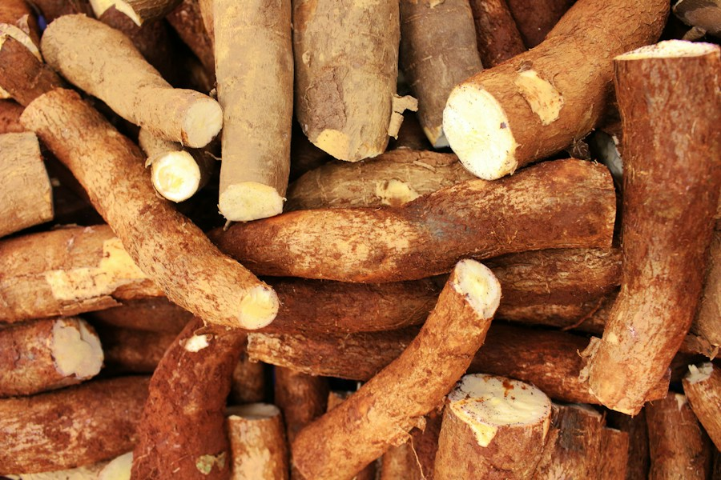

Fresh from the farm to your basket
Welcome to GreenBasket Farm Produce, a small fictional produce stall in Monrovia, Liberia. We share fresh food from local farms at sample prices.
Explore our produce or learn about our stall.

Welcome to GreenBasket Farm Produce, a small fictional produce stall in Monrovia, Liberia. We share fresh food from local farms at sample prices.
Explore our produce or learn about our stall.
